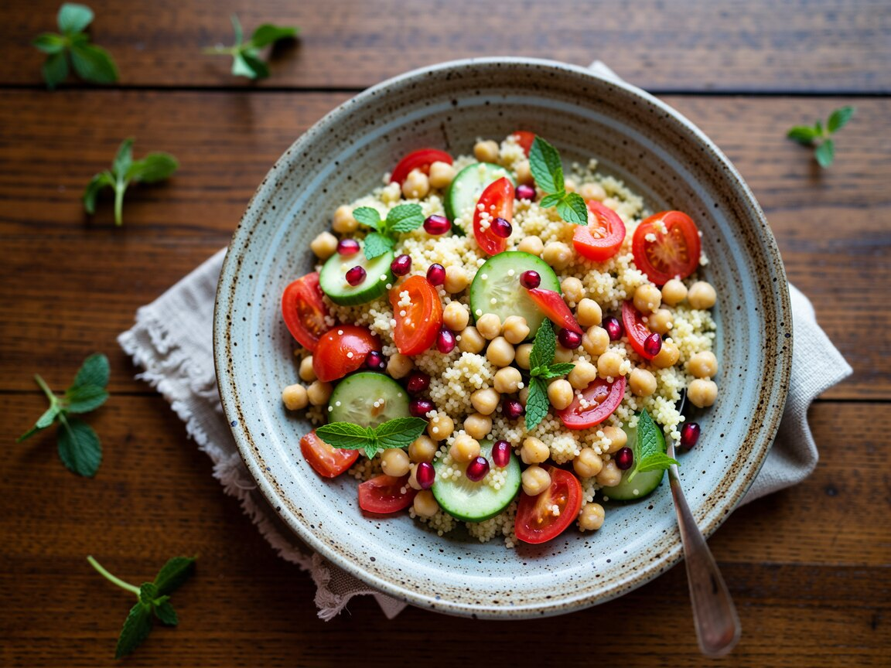

Couscous-Salat mit Kichererbsen und Minze
Kein Herd, nur der Wasserkocher.
Zutaten
- 200 g Couscous
- 1 Dose Kichererbsen
- ½ Gurke
- 250 g Kirschtomaten
- 1 rote Paprika
- 1 Bund Minze oder Petersilie
- 1 Zitrone
- 4 EL Olivenöl
- 1 TL Ras el Hanout oder Kreuzkümmel
- 1 Handvoll Granatapfelkerne oder Rosinen
- Salz, Pfeffer
So geht's
- Couscous mit 250 ml kochendem Wasser übergießen und 5 Minuten quellen lassen.
- Gemüse würfeln, Kichererbsen abspülen, Kräuter hacken.
- Zitronensaft, Öl und Gewürze verrühren.
- Alles mischen und mit Salz, Pfeffer und Granatapfel abschmecken.
Über Nacht wird der Salat nur besser. Die Box morgens einfach aus dem Kühlschrank schnappen.